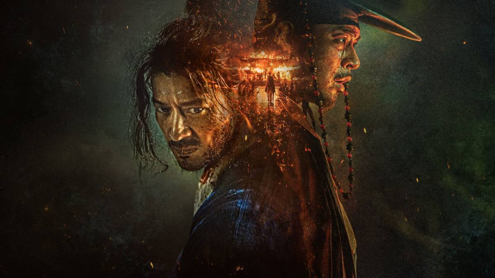

.png)
Personagem : Cheon-young
Personagem : Jong-ryeo
Personagem : King Seonjo
Personagem : Genshin
"Guerra e Revolta" é um filme sul-coreano ambientado na era Joseon, que narra a história de dois amigos de infância, Cheon-yeong e Jong-ryeo, cujas vidas tomam rumos opostos devido à guerra. Cheon-yeong, um escravo habilidoso em artes marciais, torna-se líder de uma rebelião, enquanto Jong-ryeo, seu antigo mestre, ascende como conselheiro militar do rei. O filme explora temas de amizade, lealdade e conflito social, destacando a rigidez do sistema de castas da época. Disponível na Netflix, a produção combina ação intensa com drama histórico, oferecendo uma visão profunda das tensões sociais e políticas da Coreia feudal.
"Guerra e Revolta" é um épico sul-coreano que impressiona tanto pela sua beleza visual quanto pela profundidade de seus temas. A trama, que entrelaça ação e drama histórico, explora as complexidades de amizade, lealdade e o impacto das escolhas individuais em tempos de conflito, as cenas de batalha são tecnicamente impecáveis, com coreografias intensas e uma direção de arte que transporta o espectador para a era Joseon. Além disso, a atuação dos protagonistas traz uma carga emocional que sustenta o peso narrativo, especialmente na relação entre Cheon Yeong e Jong-ryeo, marcada por laços antigos e ideais conflitantes.